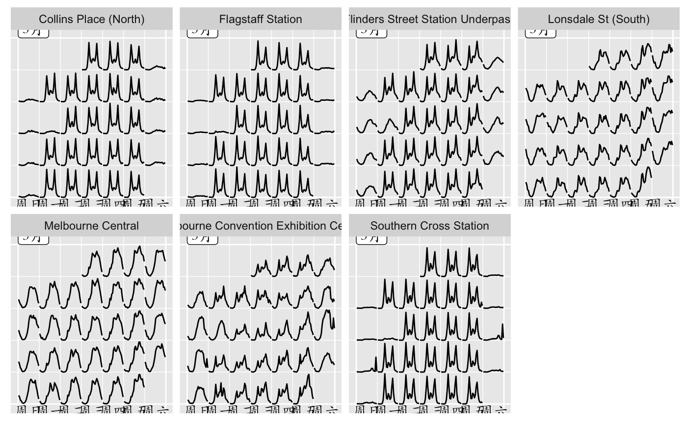
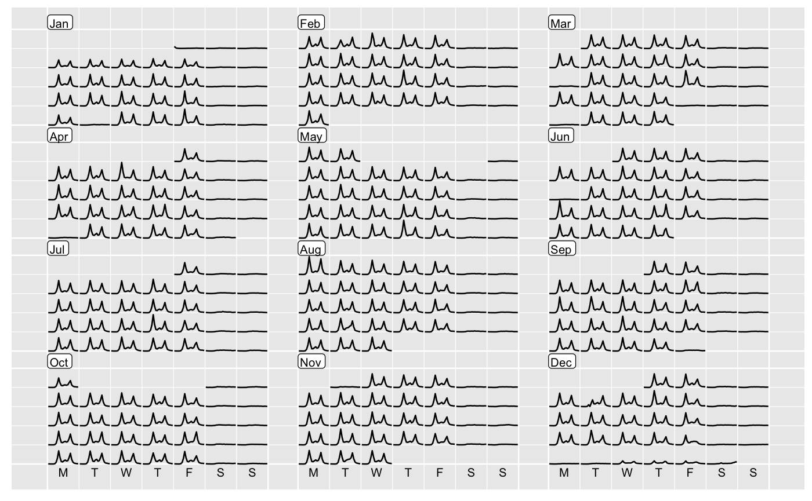

Temporal data of daily intervals or higher frequency levels can
be organised into a calendar-based format, which is useful for visually
presenting calendar-related activities or multiple seasonality (such as
time of day, day of week, day of month). The function only returns a
rearranged data frame, and ggplot2 takes care of the plotting afterwards.
It allows more flexibility for users to visualise the data in various ways.
frame_calendar(data, x, y, date, calendar = "monthly", dir = "h", sunday = FALSE, nrow = NULL, ncol = NULL, polar = FALSE, scale = "fixed") prettify(plot, label = c("label", "text"), ...)
| data | A data frame or a grouped data frame including a |
|---|---|
| x | A bare (or unquoted) variable mapping to x axis, for example time of day. If integer 1 is specified, it simply returns calendar grids on x without transformation. |
| y | A bare (or unquoted) variable or more mapping to y axis. More than
one variable need putting to |
| date | A |
| calendar | Type of calendar. "monthly" calendar (the default) organises
the |
| dir | Direction of calendar: "h" for horizontal (the default) or "v" for vertical. |
| sunday | FALSE (the default) indicating to starting with Monday in a
week, or TRUE for Sunday, when |
| nrow, ncol | Number of rows and columns defined for "monthly" calendar
layout. If |
| polar | FALSE (the default) for Cartesian or TRUE for polar coordinates. |
| scale | "fixed" (the default) for fixed scale. "free" for scaling conditional on each daily cell, "free_wday" for scaling on weekdays, "free_mday" for scaling on day of month. |
| plot | ggplot object |
| label | If "label" is specified, it will add month/week text on the
|
| ... | Extra arguments passed to |
A data frame or a tibble with newly added columns of .x, .y. .x
and .y together give new coordinates computed for different types of
calendars. date groups the same dates in a chronological order, which is
useful for geom_line or geom_path. The basic use is ggplot(aes(x = .x, y = .y, group = date)) + geom_*. The variable names .x and .y reflect
the actual x and y with a prefix ..
The calendar-based graphic can be considered as small multiples
of sub-series arranged into many daily cells. For every multiple (or
facet), it requires the x variable mapped to be time of day and y to
value. New x and y are computed and named with a . prefixed to variable
according to x and y respectively, and get ready for ggplot2 aesthetic
mappings. In conjunction with group_by(), it allows the grouped variable
to have their individual scales. For more details, see vignette("frame-calendar", package = "sugrrants")
library(dplyr) # compute the calendar layout for the data frame calendar_df <- pedestrian %>% filter(Sensor_ID == 13) %>% frame_calendar(x = Time, y = Hourly_Counts, date = Date, nrow = 4) # ggplot p1 <- calendar_df %>% ggplot(aes(x = .Time, y = .Hourly_Counts, group = Date)) + geom_line() prettify(p1)# use in conjunction with group_by() grped_calendar <- pedestrian %>% filter(Year == "2017", Month == "March") %>% group_by(Sensor_Name) %>% frame_calendar( x = Time, y = Hourly_Counts, date = Date, sunday = TRUE ) grped_calendar %>% ggplot(aes(x = .Time, y = .Hourly_Counts, group = Date)) + geom_line() + facet_wrap(~ Sensor_Name, nrow = 2)# prettify() not working for group_by